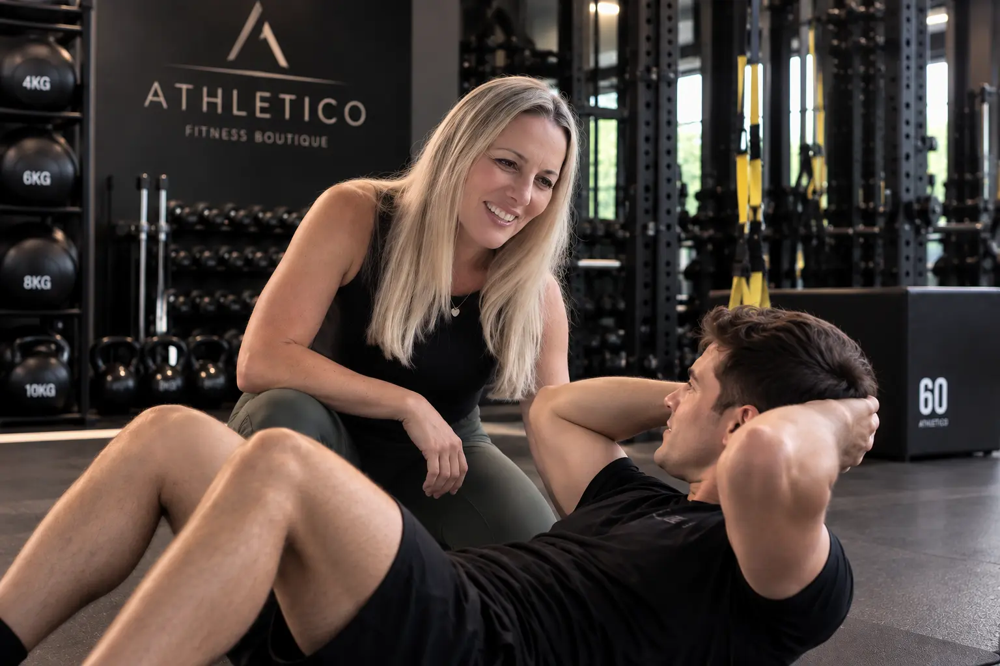
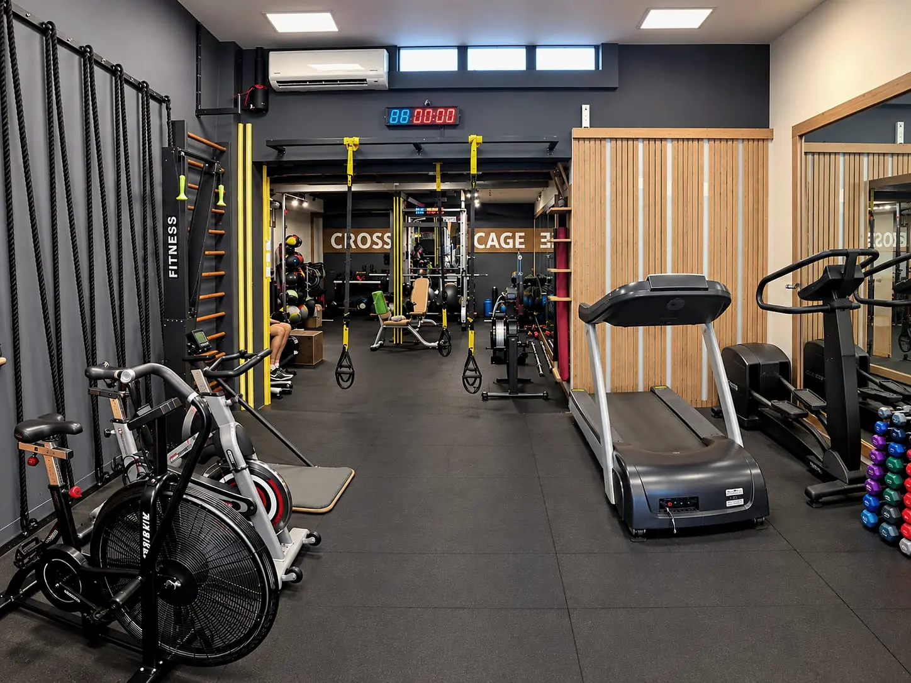
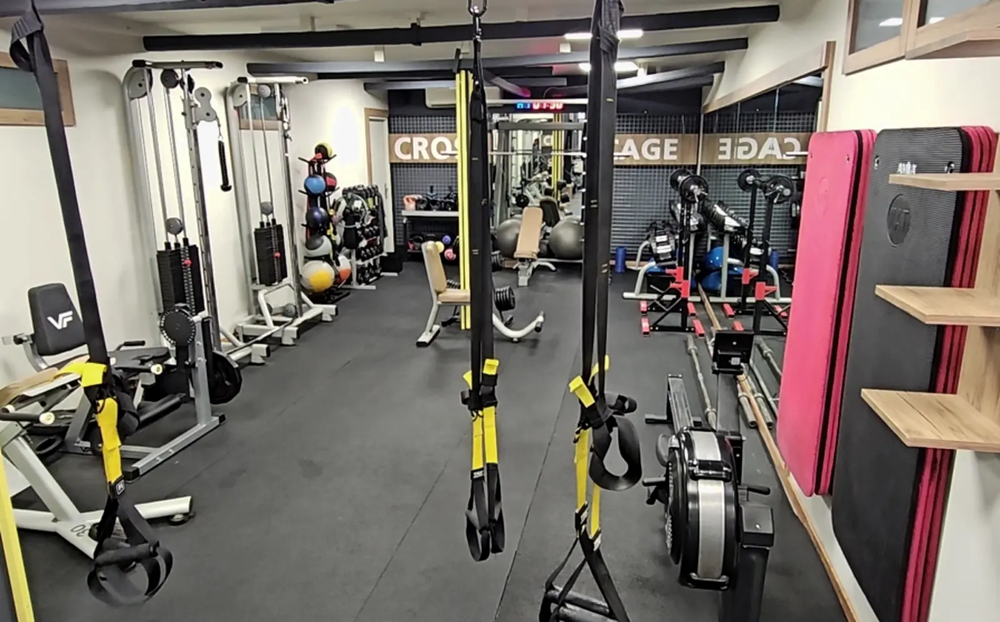
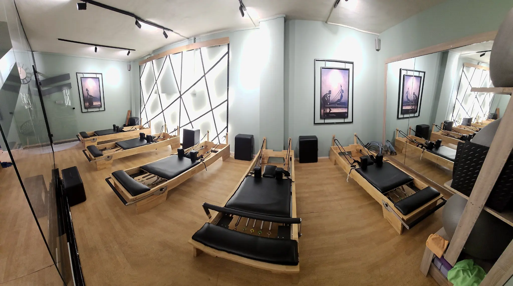
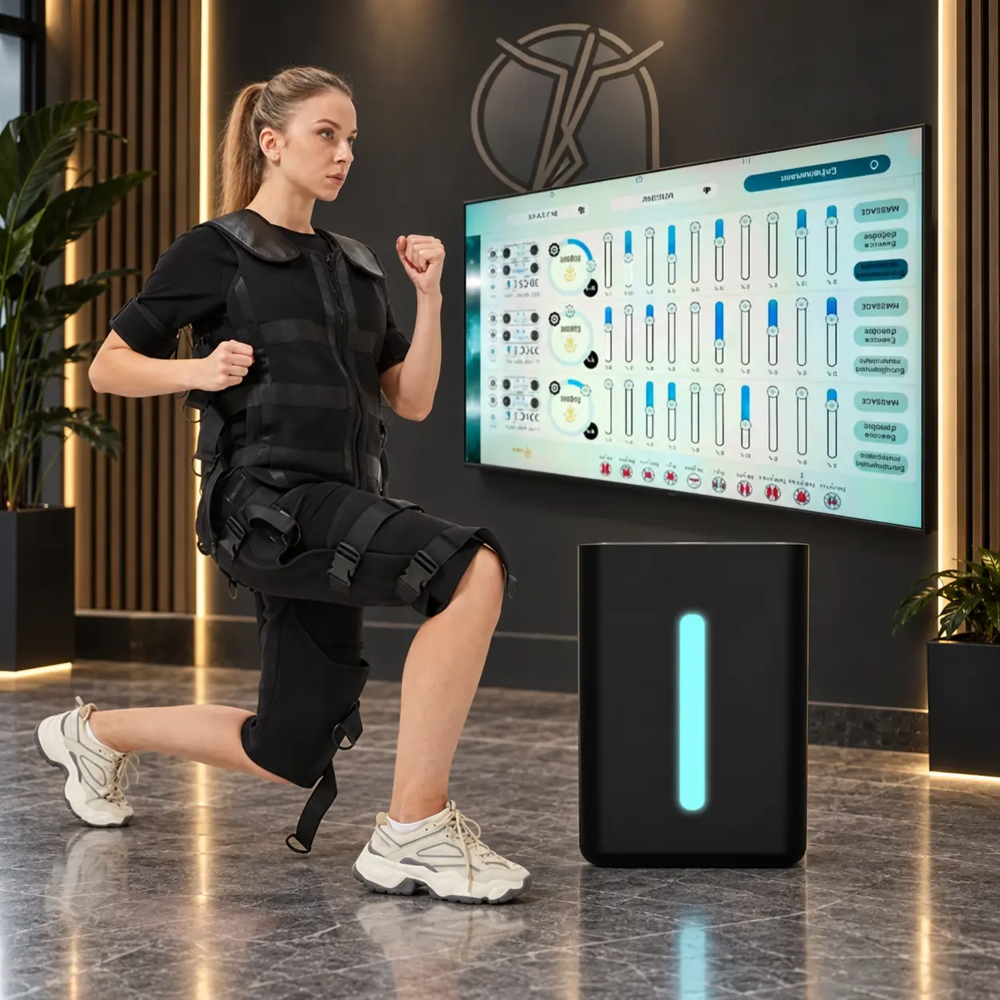
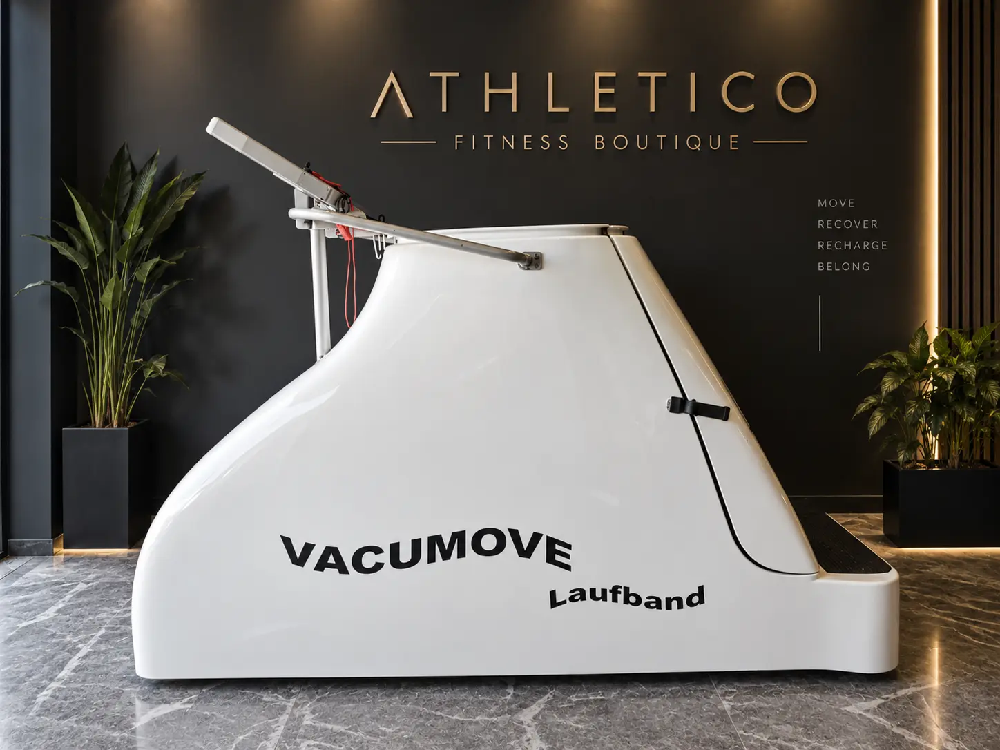
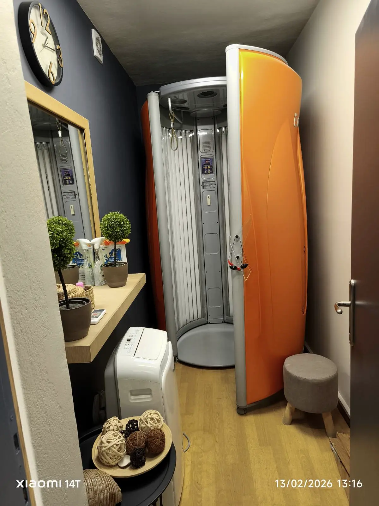

The Experiences
Κάντε κλικ πάνω στις εικόνες ή στα κουμπιά ανάπτυξης για να δείτε την πλήρη περιγραφή και τα βασικά αποτελέσματα κάθε εμπειρίας.

Personal Performance Experience
Προσωπική καθοδήγηση με έμφαση στις δικές σας ανάγκες, τον ρυθμό σας και τον στόχο που θέλετε να πετύχετε.
Μία εξατομικευμένη εμπειρία όπου η καθοδήγηση, η προσαρμογή και η συνέπεια έχουν τον πρώτο ρόλο. Το πρόγραμμα οργανώνεται γύρω από το προσωπικό σας επίπεδο και εξελίσσεται μαζί σας.
| 01 | Πιο προσωπική και στοχευμένη καθοδήγηση σε κάθε συνεδρία. |
| 02 | Καλύτερη συνέπεια μέσα από πρόγραμμα προσαρμοσμένο στον δικό σας ρυθμό. |
| 03 | Σταδιακή βελτίωση της δύναμης, της αντοχής και της ποιότητας της κίνησης. |
| 04 | Μεγαλύτερη προσοχή στη στάση, στον έλεγχο και στις προσωπικές σας ανάγκες. |
| 05 | Καθαρή κατεύθυνση προς τον στόχο σας, χωρίς περιττές ή γενικές λύσεις. |
Circuit Balance
Μία συνεχόμενη εμπειρία κίνησης που συνδυάζει ρυθμό, αερόβια στοιχεία και συνολική ενεργοποίηση του σώματος.
Το Circuit Balance βασίζεται στη ροή από στάδιο σε στάδιο, ώστε η συνεδρία να παραμένει ζωντανή και ολοκληρωμένη. Δίνει έμφαση στην αντοχή, στον ρυθμό και στην ισορροπημένη συμμετοχή όλου του σώματος.
| 01 | Βελτίωση της αερόβιας ικανότητας και της γενικής αντοχής. |
| 02 | Καλύτερη διαχείριση του ρυθμού και της έντασης μέσα στη συνεδρία. |
| 03 | Συνολική ενδυνάμωση με ποικιλία και χωρίς μονοτονία. |
| 04 | Υποστήριξη της διαχείρισης του σωματικού βάρους ως μέρος ενός συνολικού ενεργού τρόπου ζωής. |
| 05 | Περισσότερη ενέργεια και αυτοπεποίθηση στην καθημερινή κίνηση. |


Core Energy
Μία εμπειρία που εστιάζει στη σταθερότητα, στον έλεγχο και στην καλύτερη σύνδεση του σώματος με την κίνηση.
Το Core Energy έχει ως βάση τον έλεγχο του κέντρου του σώματος και την ποιότητα της κίνησης. Στόχος είναι η σταθερότητα και η αίσθηση ότι το σώμα κινείται πιο οργανωμένα και με μεγαλύτερη σιγουριά.
| 01 | Καλύτερος έλεγχος του κορμού και μεγαλύτερη σταθερότητα. |
| 02 | Βελτίωση της στάσης και της συνολικής ποιότητας της κίνησης. |
| 03 | Περισσότερη ισορροπία και σιγουριά στις καθημερινές κινήσεις. |
| 04 | Ενίσχυση της αντοχής του κέντρου του σώματος. |
| 05 | Καλύτερη σύνδεση αναπνοής, συγκέντρωσης και ελεγχόμενης κίνησης. |
Pilates Harmony
Ελεγχόμενη κίνηση, ακρίβεια και ροή με έμφαση στην ισορροπία, στη στάση και στην ευλυγισία.
Το Pilates Harmony συνδυάζει ακρίβεια, αναπνοή και ελεγχόμενη ροή. Η εμπειρία προσαρμόζεται στο προσωπικό επίπεδο με στόχο μία πιο ισορροπημένη, σταθερή και άνετη κίνηση.
| 01 | Βελτίωση της στάσης και της ευθυγράμμισης του σώματος. |
| 02 | Περισσότερη ευλυγισία και ελευθερία στην κίνηση. |
| 03 | Καλύτερη ισορροπία και έλεγχος. |
| 04 | Ενίσχυση της αντοχής του κορμού μέσα από ελεγχόμενη κίνηση. |
| 05 | Μεγαλύτερη επίγνωση του σώματος και πιο ήρεμος ρυθμός κίνησης. |


Wireless EMS · AQ8
Μία σύγχρονη, ασύρματη εμπειρία ηλεκτρομυοδιέγερσης με προσωπική καθοδήγηση και ελευθερία κίνησης.
Η τεχνολογία AQ8 εφαρμόζεται με ελεγχόμενη ένταση και προσωπική επίβλεψη. Στόχος είναι μία συμπυκνωμένη συνεδρία που ενεργοποιεί πολλές μυϊκές ομάδες ταυτόχρονα, χωρίς να περιορίζει την κίνηση.
| 01 | Ενίσχυση της μυϊκής ενεργοποίησης σε όλο το σώμα. |
| 02 | Υποστήριξη της δύναμης και της μυϊκής αντοχής μέσα από συστηματική εφαρμογή. |
| 03 | Αποδοτική επιλογή για ανθρώπους που διαθέτουν περιορισμένο χρόνο. |
| 04 | Προσωπική ρύθμιση της έντασης ανάλογα με το επίπεδο και την ανοχή του κάθε ασκούμενου. |
| 05 | Περισσότερη επίγνωση της ενεργοποίησης διαφορετικών περιοχών του σώματος. |
Vacu Move
Ελεγχόμενη αερόβια κίνηση μέσα σε ένα ιδιαίτερο περιβάλλον υποπίεσης, με έμφαση στην άνεση και στη σταθερή συνέπεια.
Το Vacu Move συνδυάζει περπάτημα ή ήπια αερόβια κίνηση με το ειδικό σύστημα της συσκευής. Η εμπειρία έχει σχεδιαστεί για ανθρώπους που θέλουν μία διαφορετική, ελεγχόμενη και άνετη μορφή κίνησης.
| 01 | Ήπια αερόβια δραστηριότητα με σταθερό και ελεγχόμενο ρυθμό. |
| 02 | Υποστήριξη της γενικής αντοχής και της καθημερινής ενεργητικότητας. |
| 03 | Έμφαση στην κίνηση του κάτω μέρους του σώματος χωρίς περίπλοκες απαιτήσεις. |
| 04 | Ευχάριστη επιλογή για όσους προτιμούν περπάτημα αντί πιο έντονων μορφών άσκησης. |
| 05 | Βοηθά στη δημιουργία μιας σταθερής ρουτίνας κίνησης και προσωπικής φροντίδας. |


Solarium
Μία ξεχωριστή υπηρεσία προσωπικής περιποίησης για όσους επιλέγουν τεχνητό μαύρισμα σε προσεγμένο περιβάλλον.
Το Solarium εντάσσεται στην εμπειρία προσωπικής περιποίησης του Athletico. Η χρήση του αφορά αποκλειστικά αισθητικό αποτέλεσμα και πρέπει να γίνεται με υπεύθυνη ενημέρωση και τήρηση των οδηγιών ασφαλείας.
| 01 | Σταδιακή εμφάνιση τεχνητού μαυρίσματος, ανάλογα με τον τύπο δέρματος και τη χρήση. |
| 02 | Πιο ομοιόμορφη αισθητική εικόνα όταν ακολουθούνται σωστά οι οδηγίες εφαρμογής. |
| 03 | Σύντομος προσωπικός χρόνος περιποίησης μέσα στον ίδιο χώρο. |
| 04 | Ελεγχόμενο περιβάλλον και καθοδήγηση ως προς τη διαδικασία χρήσης. |